Eine Fassung für den Rechner, eine eigene fürs Handy und die App für das Team.
Neu dabei: die vorhandenen Mitarbeiterdaten lassen sich in einem Zug einlesen.
3 AppsDeutsch & ItalienischImport aus Excelohne Installationhell und dunkel
01 · Der Überblick
Drei Apps statt einer Seite für alles
Bisher war es eine Oberfläche, die am Handy nur schmaler wurde. Jetzt ist
jede Fassung für ihr Gerät gebaut – und alle drei arbeiten mit denselben Daten.
🖥️ PC-FassungDie ganze Woche auf einem Bild, Schichten
mit der Maus verschieben, Tabellen, Tastenkürzel, Drucken.
📱 Handy-FassungEin Tag auf einmal, Tagesband oben,
fünf große Bereiche unten, wischen von Tag zu Tag.
👥 Mitarbeiter-AppStempeluhr, eigener Plan, eigene
Stunden, Frei-Wünsche – deutsch oder italienisch.
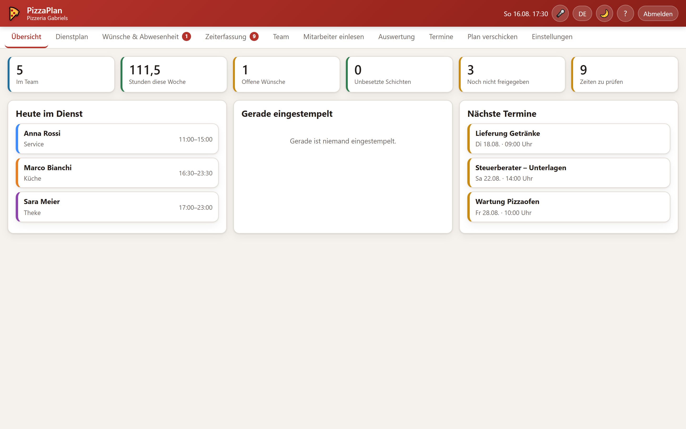
Die Startseite sagt in sechs Zahlen, was heute ansteht. Jede Kachel
ist ein Knopf.
02 · Der Dienstplan
Die Woche auf einem Bild
Links die Leute, oben die sieben Tage. Neben jedem Namen steht, wie viele
Stunden die Woche für ihn ergibt und wie viele vereinbart sind – wird es mehr, wird die Zahl rot.
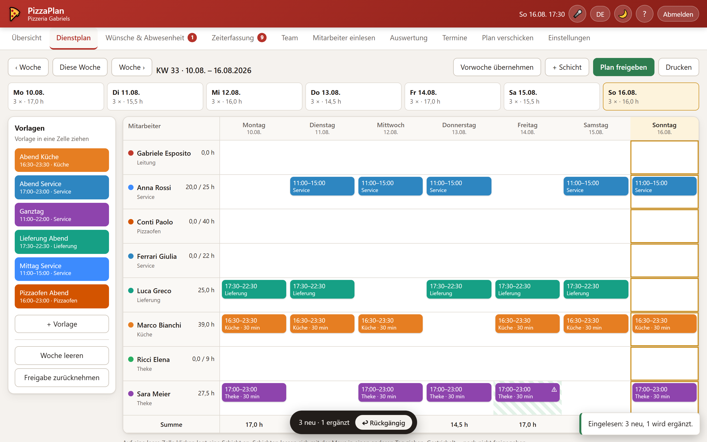
Gestrichelte Schichten sind noch Entwurf – das Team sieht sie nicht.
Die farbigen Kärtchen links sind Vorlagen zum Hineinziehen.
KlickenLeere Zelle anklicken legt eine Schicht an –
für genau diese Person an genau diesem Tag.
ZiehenEine Schicht in einen anderen Tag oder zu einer
anderen Person ziehen. Vorlagen genauso.
Vorwoche übernehmenEin Knopf kopiert die ganze Woche davor –
als Entwurf, nichts geht dabei verloren.
FreigebenErst nach der Freigabe sehen die Mitarbeiter
ihren Plan. Zurücknehmen geht auch.
03 · Eingeben
Schieben statt tippen
Pause, Stundenlohn, Wochenstunden, Urlaubstage und Zuschläge stellt man mit
dem Finger ein. Wer lieber tippt, tippt in das Feld daneben – beide bleiben gleich.
Unter den Zeiten steht sofort, was herauskommt.
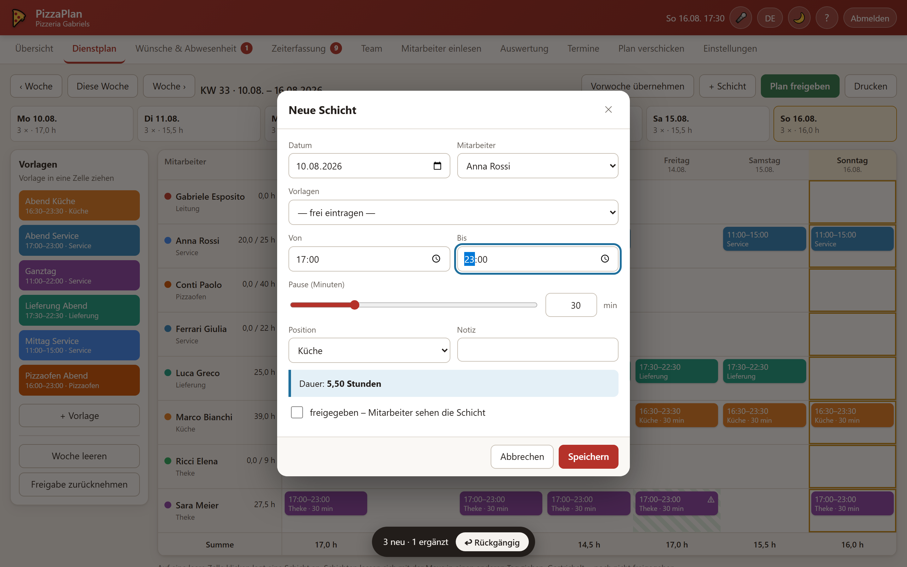
„Dauer: 5,50 Stunden“ steht da, bevor gespeichert wird – und ob
gesetzlich eine längere Pause fällig wäre.
⚠️ Das Programm passt mit auf
Zwei Schichten am selben Tag, zu wenig Ruhezeit zur Vorschicht, genehmigter Urlaub am selben
Tag, mehr Stunden als vereinbart, Stundenlohn unter dem Mindestlohn, Minijob-Grenze fast
erreicht – all das wird gesagt. Verboten wird nichts: der Betrieb entscheidet, das
Programm erinnert nur.
↩ Rückgängig statt Sicherheitsfragen
Nach jeder Änderung erscheint unten kurz ein Streifen mit Rückgängig. Statt vor jedem
Schritt zu fragen, lässt sich jeder Schritt zurücknehmen – auch das Löschen einer ganzen Woche.
04 · Neu · Der schnelle Start
Die vorhandenen Mitarbeiter einlesen
Der lästigste Teil beim Anfangen war bisher das Abtippen. Das entfällt.
Wer schon eine Liste hat – aus Excel, aus dem alten Programm, aus einer Mail – kopiert sie
einfach hinein oder wählt die Datei aus. Wer noch keine hat, füllt die mitgelieferte
Importvorlage aus.
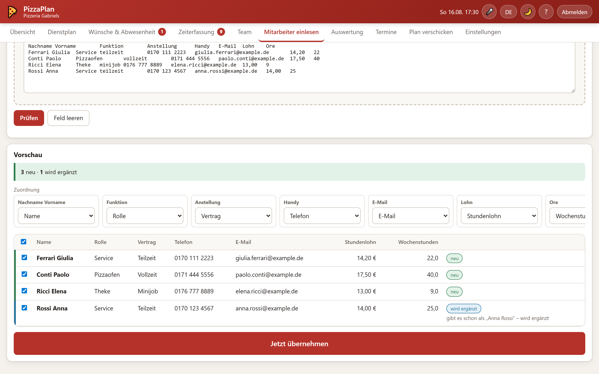
Erst die Vorschau, dann das Übernehmen: jede Zeile ist vorher zu sehen.
Spalten werden erkanntOb „Name“, „Nome“, „Mitarbeiter“
oder „Dipendente“ – die Überschriften werden verstanden, deutsch wie italienisch. Passt etwas
nicht, stellt man die Spalte von Hand um.
Zahlen und Datum14,20 und 14.20,
01.03.2024 und 2024-03-01 – alles wird richtig gelesen.
„teilzeit“, „Vollzeit“, „minijob“ werden zugeordnet.
Niemand wird doppeltWer schon im Team steht, wird erkannt
und nur ergänzt – auch wenn in der Liste Vor- und Nachname vertauscht sind.
Nichts geht verlorenErgänzt werden nur die Felder, die in
der Liste gefüllt sind. Was schon eingetragen war, bleibt stehen.
Zeile für ZeileJede Zeile lässt sich einzeln abwählen.
Leere Zeilen und Zeilen ohne Namen werden übersprungen und angezeigt.
Und wenn's daneben gingEin Klick auf „Rückgängig“ –
und der ganze Import ist wieder weg.
📄 Die Importvorlage
Die Datei Importvorlage_Mitarbeiter.csv liegt bei und lässt sich in der App
jederzeit herunterladen. Sie öffnet sich in Excel, hat elf Spalten und ist mit vier
Beispielzeilen gefüllt, damit man sieht, wie es gemeint ist.
Spalte
Beispiel
Pflicht?
Name
Rossi Anna
ja
Rolle
Service
nein
Vertrag
Teilzeit · Vollzeit · Minijob · Aushilfe · Azubi
nein
Telefon · E-Mail
0170 1234567 · anna@…
nein, aber nötig zum Verschicken
Stundenlohn · Wochenstunden · Urlaubstage
13,50 · 20 · 24
nein
Eintritt · Sprache · Notiz
01.03.2024 · it · Pizzaiolo
nein
05 · Das Team
Alles zu jeder Person an einer Stelle
Rolle, Vertrag, Telefon, E-Mail, Stundenlohn, vereinbarte Wochenstunden,
Urlaubstage, Farbe im Plan und die Sprache. Dazu für jeden ein persönlicher Link: wer den
antippt, ist ohne Anmeldung in seiner eigenen App.
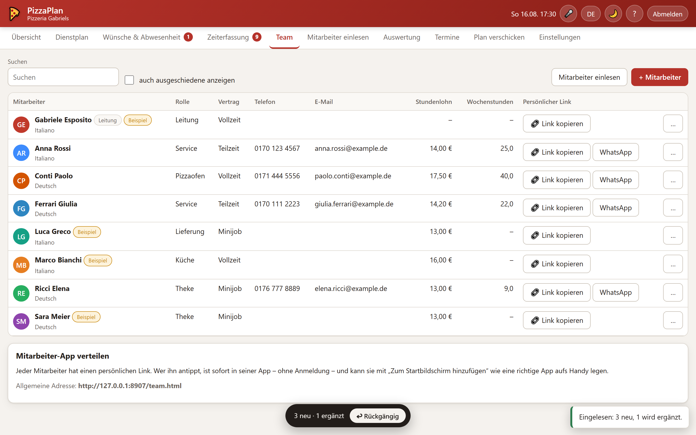
Der Knopf „WhatsApp“ schickt dem Mitarbeiter seinen persönlichen Link
mit einem fertigen Text.
06 · Wünsche und Zeiten
Frei-Wünsche, Urlaub, Krankmeldung
Alles läuft an einer Stelle zusammen und wird mit einem Haken genehmigt oder
abgelehnt. Im Dienstplan sind diese Tage danach schraffiert – man sieht beim Planen sofort,
wer nicht kann.
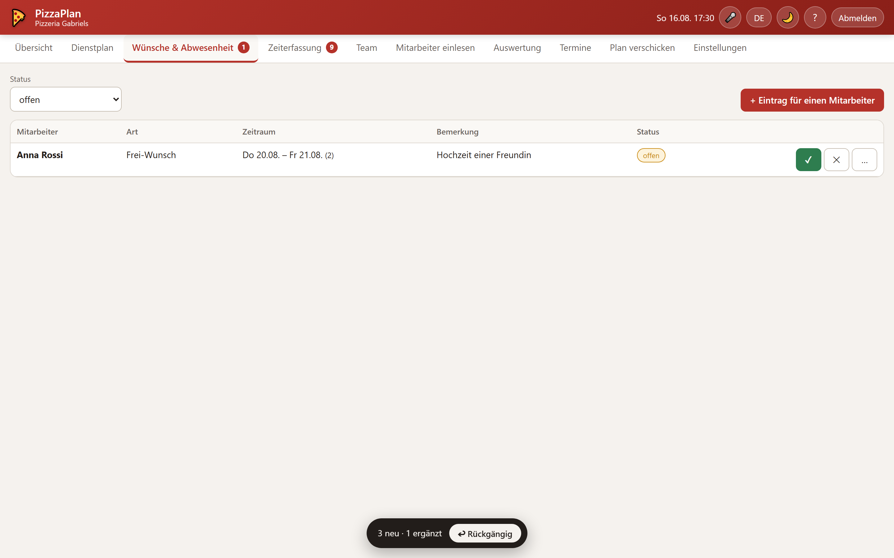
Grün genehmigt, gelb offen, rot abgelehnt. Die Zahl im Menü zeigt,
wie viel noch offen ist.
07 · Auswertung
Am Monatsende steht alles beieinander
Gearbeitete Stunden gegen geplante, Sonntags- und Nachtstunden, Urlaubs- und
Krankheitstage und was das ungefähr kostet. Ein Klick auf eine Zeile zeigt die einzelnen Tage.
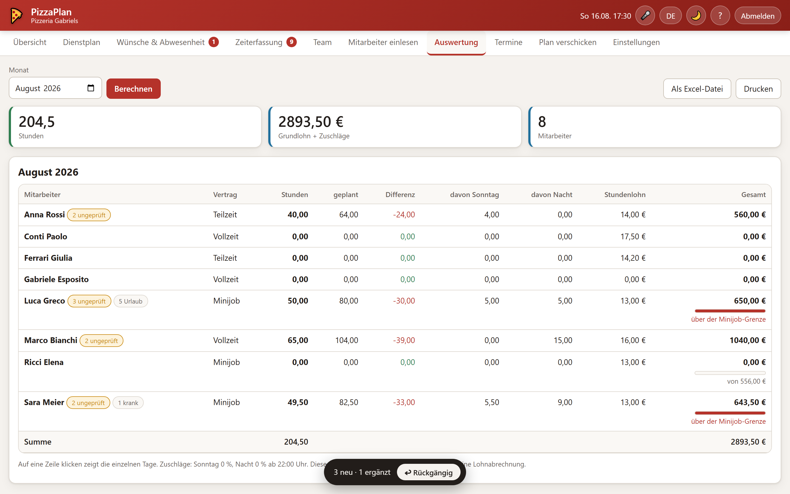
Bei Minijobs zeigt ein Balken, wie nah die Grenze schon ist – wird sie
überschritten, wird er rot. Alles lässt sich als Excel-Datei mitnehmen.
Die Übersicht ist eine Rechenhilfe für den Betrieb und
ersetzt keine Lohnabrechnung.
08 · Verschicken
Jeder bekommt seinen eigenen Plan
Zeitraum wählen, WhatsApp oder E-Mail, Haken bei den Leuten – und für jeden
öffnet sich die fertige Nachricht mit seinen eigenen Schichten, der Summe und dem Link zu seiner
App. Wer Italienisch hinterlegt hat, bekommt den Text auf Italienisch.
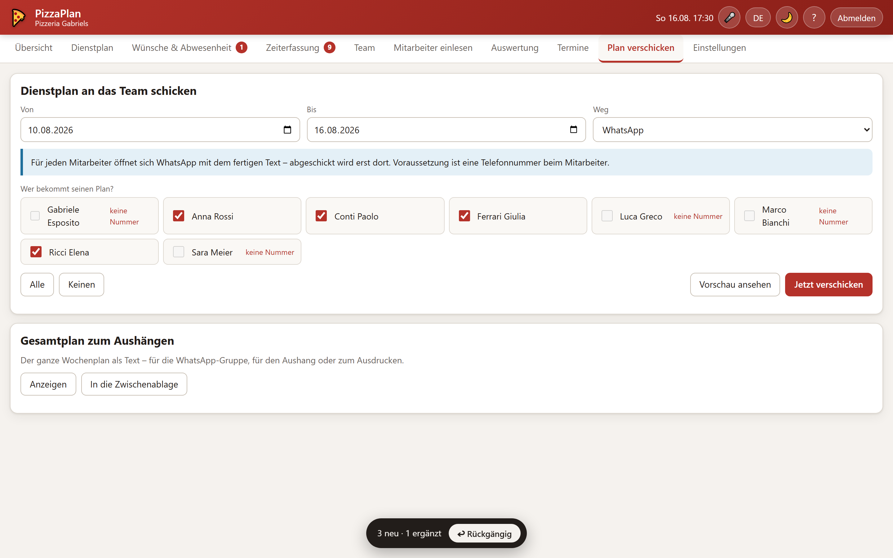
Abgeschickt wird erst in WhatsApp beziehungsweise im Mailprogramm –
von allein passiert nichts.
09 · Auf dem Handy
Kein zusammengeschobener Bildschirm
Die Handy-Fassung ist eine eigene App: unten fünf große Bereiche, oben das
Tagesband, ein Tag auf einmal. Von Tag zu Tag wischt man nach links oder rechts. Fenster fahren
von unten herein, wie man es vom iPhone kennt.
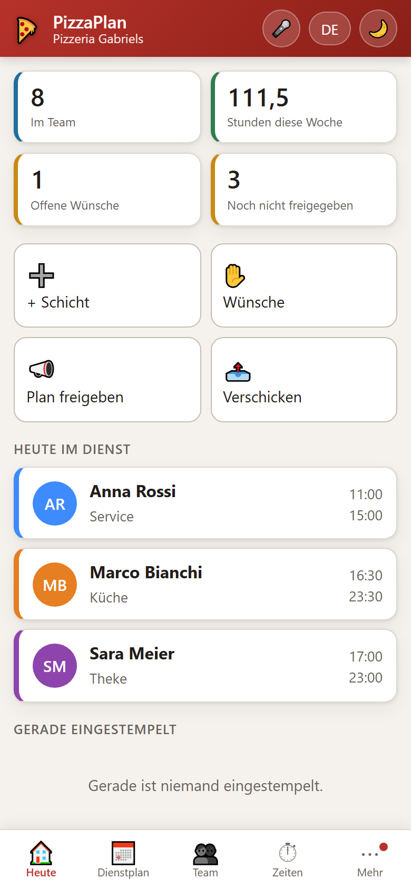
Heute: Zahlen, Schnellknöpfe, wer im Dienst ist
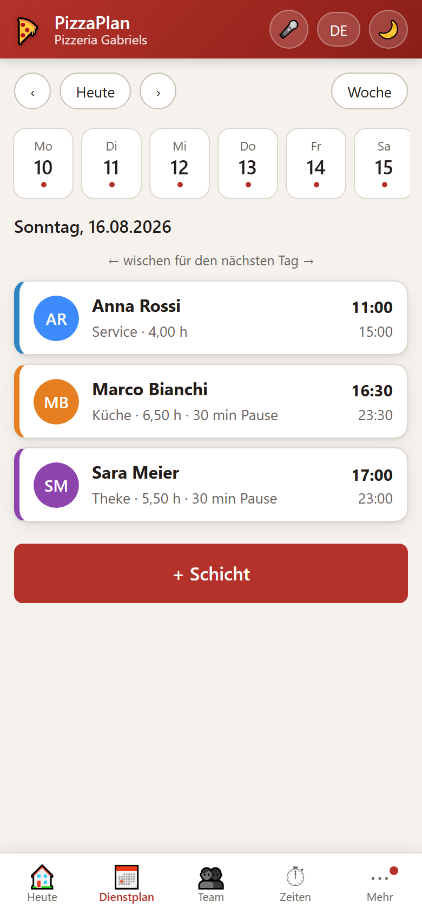
Dienstplan: ein Tag, große Zeilen zum Antippen
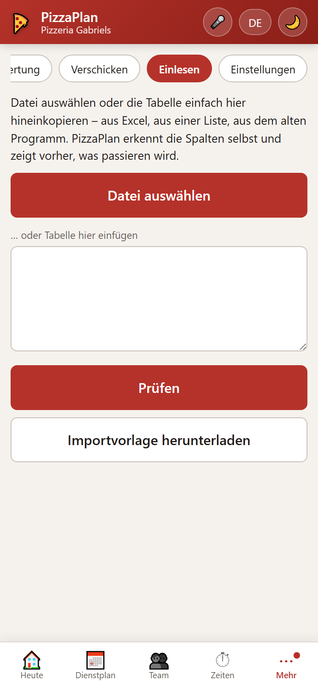
Einlesen geht auch vom Handy aus
10 · Die App der Mitarbeiter
Für das Team so einfach wie möglich
Namen antippen, PIN, fertig. Danach bleibt man angemeldet. Groß in der Mitte
die Stempeluhr, darunter die eigenen Schichten, die eigenen Stunden und ein Knopf, um frei zu
wünschen. Wer als Sprache Italienisch hinterlegt hat, sieht alles auf Italienisch.
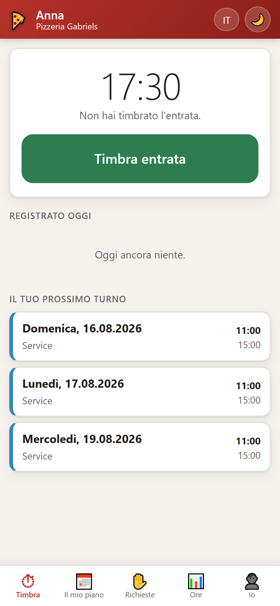
Stempeluhr – hier auf Italienisch
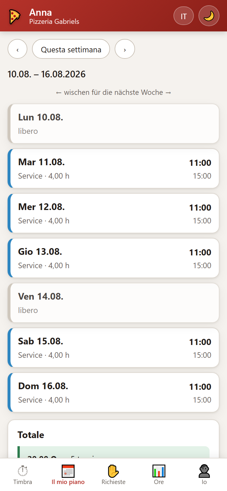
Der eigene Plan, Woche für Woche
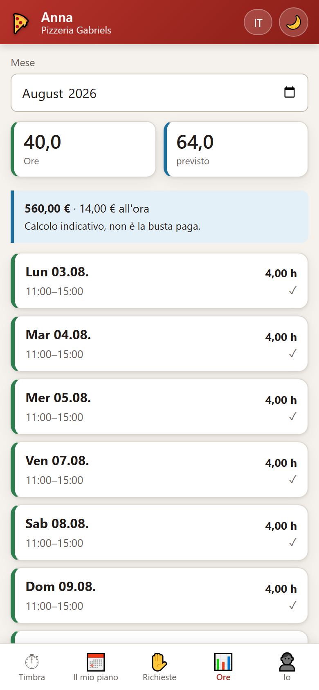
Die eigenen Stunden im Monat
11 · Kleinigkeiten
Was den Alltag leichter macht
🇩🇪 🇮🇹 Zwei SprachenEin Knopf oben rechts schaltet die ganze
Oberfläche um. Jeder Mitarbeiter hat seine eigene Sprache.
🌙 Hell und dunkelFür den Abend im Lokal. Die App merkt sich
die Wahl.
🎤 Sprechen statt tippen„Teile Anna am 5.6. um 17 Uhr ein“,
„Marco hat morgen frei“, „Wer arbeitet am Samstag?“ – vor dem Speichern wird gezeigt, was
verstanden wurde.
⏰ Termine mit ErinnerungLieferant, Steuerberater, Wartung –
mit Wiederholung und einer Erinnerung, die sich melden kann.
🖨️ Drucken und AushängenDer Wochenplan als Ausdruck und der
Gesamtplan als Text für die WhatsApp-Gruppe oder den Aushang.
💾 SicherungskopieEin Knopf legt den ganzen Stand als Datei ab
– und spielt ihn woanders wieder ein.
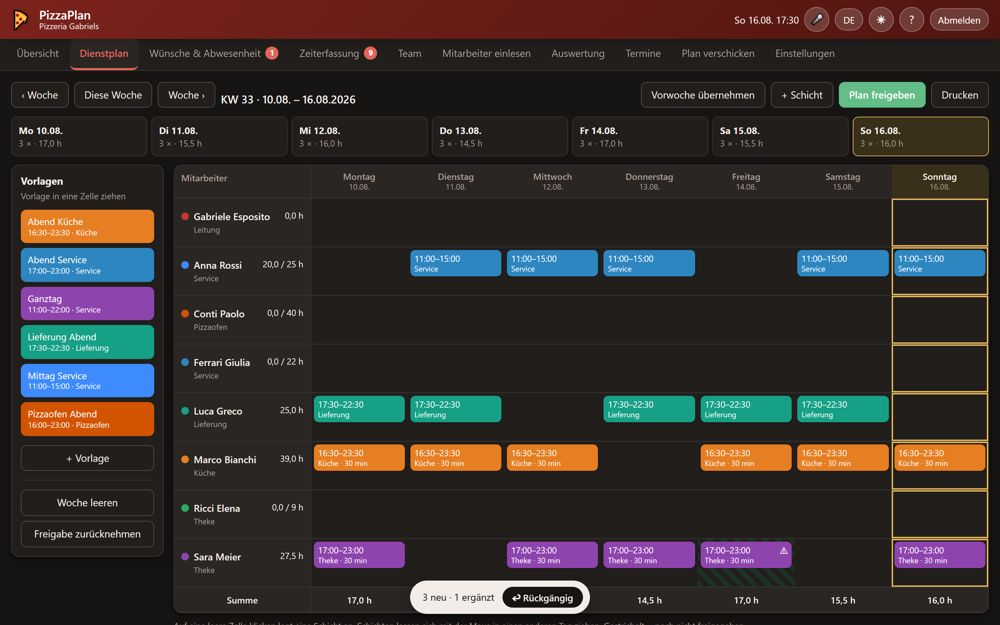
Derselbe Plan in der dunklen Fassung.
12 · So fängt man an
In einer Viertelstunde einsatzbereit
Link öffnen und Chef-PIN eingebenBeim ersten Start ist die PIN 1234. In den Einstellungen wird sie geändert.
Mitarbeiter einlesenDie vorhandene Liste hineinkopieren oder die Importvorlage ausfüllen und auswählen.
Vorschau prüfen, übernehmen.
Beispieldaten entfernenEin Knopf in den Einstellungen räumt das mitgelieferte Beispielteam samt Beispielplan weg.
Betrieb einstellenName, Positionen, Pausenregeln, Zuschläge und die Minijob-Grenze – alles mit
Schiebereglern.
Erste Woche planen und freigebenVorlagen ziehen, freigeben, verschicken. Jeder bekommt seinen Link zur Mitarbeiter-App.